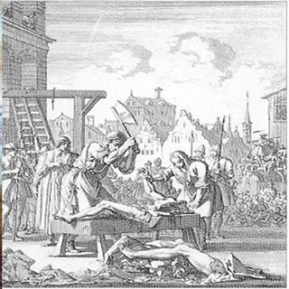

Isusovački blaženici
Svećenik
Bl. Robert Middleton
1571. – 1601.
Robert Middleton vratio se katoličkoj vjeri svoje obitelji i postao svećenik. Želio je stupiti među isusovce, ali zatvor je prekinuo njegovu pripremu.
Tekst je preveden i prilagođen uz pomoć umjetne inteligencije.

Izvor slike
- Spomendan
- 1. prosinca
- Zaštitništvo
- Nije navedeno u izvoru
- Životni vijek
- 1571. – 1601.
- Djelovanje
- Misije i evangelizacija · Obraćenje i novi počeci · Progoni i progonstvo · Mučeništvo
- Razdoblje
- 16., 17. stoljeće
- Rođenje — dostupni podaci
- 1571.; dan i mjesec nisu potvrđeni u provjerenom izvoru.
- Mjesto rođenja
- Engleska
- Datum smrti
- 31.03.1601.
- Mjesto smrti/mučeništva
- Lancaster, Engleska
- Okolnosti smrti/mučeništva
- Obješen, zatim obezglavljen; pogubljen zbog katoličkoga svećeništva.
- Uloga
- Svećenik
- Mučenik
- Da
- Ostale oznake
- Mučenik engleskih protukatoličkih progona
- Pripadnost
- Isusovac
- Razlike u izvorima
- Datum smrti u podatcima zbirke: 31.03.1601. Raniji biografski izvor navodi 03.04.1601. Razlika izvora nije razriješena.
- Drugi oblici imena
- Robert
Životopis
Robert Middleton odrastao je u Yorku u obitelji katoličkoga podrijetla, ali je kao mladić pripadao Engleskoj crkvi. Vrativši se katoličkoj vjeri, otišao je na studij u Reims, zatim u Sevillu i 1597. u Rim. Za svećenika je zaređen početkom 1598. Ubrzo se vratio u domovinu i nešto više od dvije godine potajno služio vjernicima.
Prije nego što je mogao započeti isusovački novicijat, uhićen je u rujnu 1600. Priznao je svoje svećeništvo, ali odbacio tvrdnju da sudjeluje u podrivanju vlasti. Iz Lancashirea je poslan u London, a zatim vraćen u Lancaster radi suđenja. Presuda je počivala na tome što je ređen u inozemstvu i vratio se obavljati katoličku svećeničku službu.
U pismu poglavaru Družbe Henry Garnet svjedoči da ga je Middleton više puta molio za primanje među isusovce. Odobrenje mu je poslano u zatvor; Garnet nije bio siguran je li mu poruka stigla. To pismo objašnjava zašto ga isusovačka predaja ubraja među svoju subraću, premda nije prošao redoviti novicijat.
Pogubljen je 3. travnja 1601. zajedno sa svećenikom Thurstonom Huntom. U Lancasteru ga pamti spomen-ploča katoličkih mučenika. Povijesni opis okružnoga arhiva podsjeća da su tada pomaganje svećenicima, slušanje mise i svećeničko ređenje izvan zemlje mogli dovesti do teških kazni.
Tekst je preveden i prilagođen uz pomoć umjetne inteligencije.
Pročitaj više na izvornoj stranici ↗